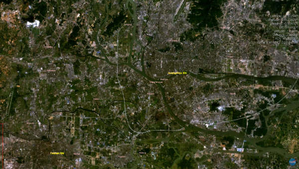
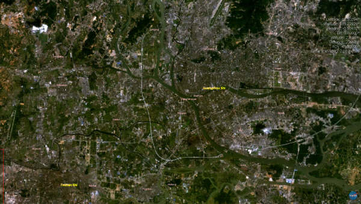

Crying...
6/2/2005 7:24:56 PM
苍天比我软弱，一下子就哗啦哗啦哭了。
想不到，狠下心来上一次体育课，也不能让我如愿。
------------------------------------------------------------
最近我很痴迷一个叫 World Wind 的软件，是 NASA(National Aeronautics and Space Administration) 美国航空和宇宙航行局 开发的。这个软件是基于 Microsoft .Net Frameworks 的虚拟地球。
透过 World Wind 程序的3D引擎，可以让你从外太空看见地球上的任何一个角落。结合在线的资料库，World Wind最高的解析度可以达到每象素代表15公尺，也就是说一些比较大的街道可以看得一清二楚，而且包括了可见光以外得影像。此外，透过其中的功能，你可以进行一趟地球的3D飞行之旅，体验飞过圣母峰的感觉。另外透过及时动画形成的模组你可以即时体验飓风如果席卷佛罗里达州或者是气候变化情况。
World Wind 的清晰度让我很震惊，我和朋友一致认为，这种科技的民用化实在来的太快，在我们没有想象到的今天就突然出现了。有兴趣的朋友去下载一个回来试试看。
我在电脑上利用 World Wind 截得下面一组图片，分别是：鸟瞰中国，鸟瞰广州，广州上空的飞行视图还有就是鸟瞰南极圈。
让我们一起感受一下振奋人心的科技吧！

http://worldwind.arc.nasa.gov/
 
